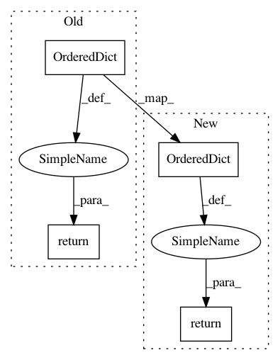

3e12d49324793d4798ee10bb6ef6a1c1b7633baf,python/caffe/pycaffe.py,,_Net_blobs,#,19
Before Change
An OrderedDict (bottom to top, i.e., input to output) of network
blobs indexed by name
return OrderedDict([(bl.name, bl) for bl in self._blobs])
@property
def _Net_params(self):
After Change
An OrderedDict (bottom to top, i.e., input to output) of network
blobs indexed by name
return OrderedDict(zip(self._blob_names, self._blobs))
@property
def _Net_params(self):
In pattern: SUPERPATTERN
Frequency: 3
Non-data size: 4
Instances
Project Name: BVLC/caffe
Commit Name: 3e12d49324793d4798ee10bb6ef6a1c1b7633baf
Time: 2014-09-01
Author: jonlong@cs.berkeley.edu
File Name: python/caffe/pycaffe.py
Class Name:
Method Name: _Net_blobs
Project Name: vitchyr/rlkit
Commit Name: 7290c19623ca29e0affa8068488487132f2b8ed3
Time: 2019-04-09
Author: vitchyr@gmail.com
File Name: rlkit/samplers/data_collector.py
Class Name: MdpPathCollector
Method Name: get_diagnostics
Project Name: vitchyr/rlkit
Commit Name: 7290c19623ca29e0affa8068488487132f2b8ed3
Time: 2019-04-09
Author: vitchyr@gmail.com
File Name: rlkit/samplers/data_collector.py
Class Name: GoalConditionedPathCollector
Method Name: get_diagnostics